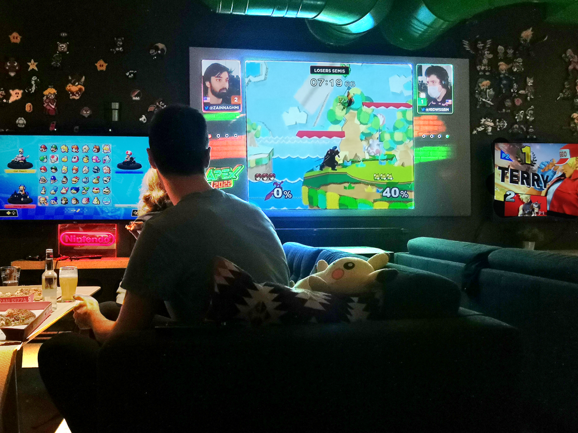
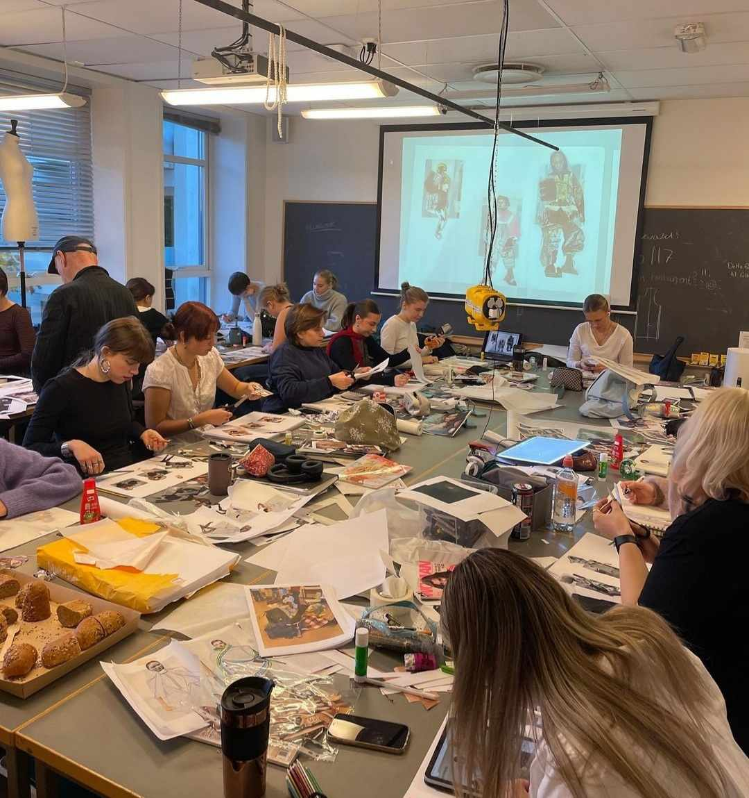

Å bli medlem av en studentforening er en måte å gjøre studietiden morsommere på. På OsloMet finner du et stort mangfold av foreninger som du kan bli medlem av.
Så enten du er interessert i gaming, mote, film, entreprenørskap eller noe helt annet, finner du en forening som passer deg.
Her er er en kort presentasjon av månedens utvalgte foreninger:
Formålet med foreningen er å arrangere sosiale og faglige arrangementer for studenter på studiet mote og produksjon på OsloMet. Foreningen skal jobbe mot en avgangsvisning etter innlevert Bachelor.
Vi har som formål å styrke det sosiale samholdet på et lite studie, samt holde arrangementer som alle klassetrinn kan være en del av. Et sentralt prosjekt er å jobbe mot en avgangsvisning der siste-års-studenter viser Bachelor-oppgavene sine.
En studentforening for ALLE spillinteresserte i Oslo og omegn, hovedsakelig med fokus på det sosiale i dataspill, rollespill og brettspill med andre, på nett og fysisk.
OsloMet Gaming arrangerer arrangementer for alle med en interesse i spill, i Oslo og Omegn. Arrangementene tar sted jevnlig med 2-3 arrangement i måneden. Her kan interesserte folk komme og sosialisere eller bare slappe av med andre spillinteresserte! Hvert semester arrangerer vi også et LAN-party som går over en hel helg! Vi tilbyr tilgang til PC og konsoller, VR, kort- og brettspill og rollespill som DnD på alle våre arrangement! Målet er også å være en arena hvor studenter kan komme i kontakt med hverandre i forskjellige grupper, slik at felles interesser kan fremmes og alle kan inkluderes!
Bedre studiehverdagen til studenter ved ingeniør-, teknologi- og datafag ved Oslomet.
Oslo Tekniker Samfund - OTS er Oslomets største studentforening med ca 2400 studenter fra ingeniør-, teknologi- og datafag. Foreningen ble startet i 1912 da utdanningen het Kristiania Tekniske Mellomskole. OTS er en frivillig organisasjon som jobber for at medlemmene skal få en best mulig studiehverdag. Gjennom undergruppene tilbyr OTS velferdstilbud som OTS-kroa, fadderperiode, OTS-hytta, trimrom, jentegruppa, klatregruppe, bandrom, næringslivsdagene og Hemsedaltur. Foreningen fungerer også som et talerør til administrasjonen ved hjelp av tillitsvalgte som kan fronte eventuelle oppdukkende saker.